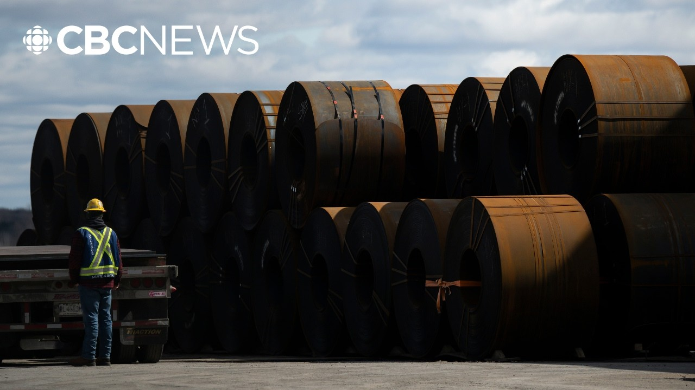

【特朗普新关税威胁重创加拿大钢铁行业】
Summary: Canadian Steel Producers Association president Katherine Cobden calls Trump's new tariffs another devastating blow to Canada's steel industry, warning of supply chain disruptions, job losses, and urging immediate government retaliation.
摘要： 加拿大钢铁协会主席Katherine Cobden就特朗普新关税威胁表示，这对加拿大钢铁行业是又一沉重打击，将导致供应链中断、失业加剧，并呼吁政府立即采取反制措施。

⏱️ Estimated Reading Time: 13 min
Katherine Cobden joins us now.
凯瑟琳·科布登现在加入我们。
She is the president and CEO of the Canadian Steel Producers Association.
她是加拿大钢铁生产商协会的主席兼首席执行官。
Katherine, very good to see you again.
凯瑟琳，很高兴再次见到你。
Thanks for making some time for us.
感谢你抽出时间接受采访。
Good morning, Natasha.
早上好，娜塔莎。
I wish it was under better circumstances.
希望我们是在更好的情况下交谈。
Well, you know what? Me, too.
嗯，你知道吗？我也是。
But let me ask you for your reaction because many of us were taken by surprise.
但请谈谈你的反应，因为许多人都感到意外。
What were you thinking when you heard Trump's announcement?
听到特朗普的声明时，你在想什么？
Well, listen, we've had months and months we've months of disarray uh and uncertainty.
听着，我们经历了数月的混乱和不确定性。
So this is yet another, you know, uh, punch in the gut, if you will, from the president on the domestic steel industry here in Canada.
所以这可以说是总统对加拿大国内钢铁行业的又一次重击。
We're their largest trading partner in steel.
我们是他们最大的钢铁贸易伙伴。
They're our largest trading partner as well.
他们也是我们最大的贸易伙伴。
And we're highly integrated and, you know, simply put, we do not understand at all why this is why this is happening.
我们高度一体化，简而言之，我们完全不明白为什么会这样。
Um, and it will have negative consequences.
这将带来负面后果。
I I obviously negative consequences in Canada with the domestic steel industry in many forms, but it will also have significant consequences to the United States in terms of uh security of supply and in terms of pricing.
显然，这对加拿大国内钢铁行业有多重负面影响，但也将严重影响美国的供应链安全和价格。
There's a lot there I want to dig into a bit more, but let me again just for the clarity of people watching sake, did you have any idea this was coming?
我想深入探讨，但为了让观众更清楚，你之前预料到这一点了吗？
Well, the president actually did do this once before um just ahead.
总统之前确实这样做过一次。
I think it was in mid-March and you know we thought at that point so I guess we always know there's a risk uh of unpredictability with the president uh but did we expect this? Absolutely not.
大概在三月中旬，当时我们就意识到总统的不可预测性，但这次我们绝对没预料到。
And we didn't expect tariffs in the first place given uh the business uh that I was describing earlier and how integrated we are with the United States.
鉴于我们与美国的紧密商业联系，我们一开始就没预料到关税。
It's completely unjustified.
这完全不合理。
Have you heard anything from the prime minister's office or anyone from the federal government?
你从总理办公室或联邦政府那里听到什么消息了吗？
Well, we're starting to engage with the federal government.
我们正开始与联邦政府接触。
We know they're monitoring the situation, but frankly uh the the folks that I represent, the steel industry right across this country is we're looking for immediate action.
我们知道他们在关注局势，但坦率地说，我代表的全国钢铁行业希望立即行动。
Uh once this is confirmed in writing, which we are expecting uh you know over the course of this day uh the executive order to become visible uh we're expecting our government to act uh you know quickly and decisively uh on two key areas.
一旦书面确认（预计今天内会看到行政令），我们希望政府在两个关键领域迅速果断行动。
One is the retaliatory response and another is to ensure that we're putting up measures as soon as possible at our border because this not only uh causes problems with our access to the United States, but many much steel around the world will be looking for new markets and and will be targeting Canada.
一是报复性回应，二是在边境尽快实施措施，因为这不仅影响我们进入美国市场，全球过剩钢铁也会瞄准加拿大。
Now, we do need to wait to see what the exact parameters are going to be, but we heard from President Trump that he would like this to go into effect as of June 4th, 4 days from now.
我们需要等待具体细则，但特朗普表示希望6月4日（四天后）生效。
That's not a lot of time.
时间紧迫。
Um, and we know the prime minister is going to be at the first minister's meeting tomorrow.
总理明天将出席省长会议。
He's going to be meeting with the premers.
他将与各省省长会面。
Have you been in touch with any of the premers to sort of push this on the agenda for tomorrow?
你是否联系过省长推动此事列入议程？
Absolutely.
当然。
the premers that are uh you know that have the most steel in their province are deeply engaged and we expect they will be raising this uh as well with the federal government.
钢铁大省的省长们已积极参与，预计他们也会向联邦政府提出此事。
But I want to make one thing really clear even though this is a new development over the course of the last you know 12 hours or so we do know uh we have been asking for the exact same thing from the federal government even under the 25% tariff.
但我想明确一点：尽管这是过去12小时的新进展，但即使在25%关税时期，我们也一直向联邦政府提出同样要求。
We mustn't forget the 25% tariff was was creating havoc and disruption as well.
别忘了25%关税也曾造成严重破坏。
So this sort of doubles down the urgency if you will and accelerates the job losses.
这进一步加剧了紧迫性，加速了失业。
But we've already lost significant jobs and customers and we'll never see those back.
我们已经失去大量就业和客户，且无法挽回。
We need responses immediately.
我们需要立即回应。
So that's kind of the good news in this.
这算是唯一的好消息。
It's not the beginning of the story in the sense that we have been asking the government for the exact same thing yesterday as we're asking for them today.
这不是新问题——我们过去和现在的诉求完全一致。
So they should be in a more in a ready position to respond.
因此政府应更准备好回应。
What have you thought so far of I mean it's a brand new government, a new prime minister.
你对新政府和新总理迄今的表现有何看法？
He's met with the president.
他已与总统会晤。
He's gone to Washington.
去过华盛顿。
We just had the throne speech where he's reinforced his commitment to Canadian industry.
最近的施政演说也强调了对加拿大工业的承诺。
Is it enough so far?
目前足够吗？
All listen, all great signs.
这些都是积极信号。
All great signs.
非常积极。
And in fact, uh you know, the this prime minister launched before the election a consultation on border measures.
事实上，这位总理在选举前就启动了边境措施磋商。
I guess all we're saying now is uh it's time to act.
我们现在只想说：是时候行动了。
So it's been great to uh see the you know tone the more uh collegial tone if you will between uh the prime minister Carney and President Trump but I think at this point we now need to put uh put some action into place.
总理与特朗普的友好基调很好，但现在需要实际行动。
It's simply too urgent to ignore.
形势紧迫，不容忽视。
Katherine, let's play out the worst case scenario that action is not taken.
凯瑟琳，假设最坏情况——未采取行动——
the 50% tariffs go into effect starting June the 4th.
50%关税6月4日生效。
Walk me through the scenario.
请描述可能的情景。
Then what starts happening to the Canadian steel industry in Canada?
加拿大钢铁行业会怎样？
Well, listen, 25% had serious consequences.
25%关税已造成严重后果。
I've already discussed the jobs that have been lost or hundreds of jobs lost already.
我已提过已损失的数百个工作岗位。
Um what I think you can see what you'll see right away is uh at least at 25% while shipments reduced by about 25 to 30% itself I think you're going to see shipments from Canada to the United States completely stop and for your for the you know context that's 1/ half of everything we produce in the country will no longer be shipped.
25%关税时出货量已减少25-30%，而50%将导致对美出口完全停止——这意味着全国一半产量无法出口。
So that's a dramatic situation.
这是严峻局面。
Earlier you said that the businesses that have been lost to the Canadian steel industry will not be regained.
你之前说损失的客户无法挽回，为什么？
Why? Why can they not be brought back?
为何无法挽回？
Well, the the the problem will be uh you know once you've lost customers, once you once you've lost employees, etc.
问题在于，失去客户和员工后——
You it really is uh and once you're operating in the context that we are operating in in the steel industry where there's a global glut of steel, uh all we can see is problems.
在全球钢铁过剩的背景下，我们只会看到更多问题。
uh it's going to be really really difficult uh to reestablish our role in the supply chain and you know I got to I have to emphasize at this moment how important a domestic steel industry to a nation's national security economic security and frankly sovereignty so I think it should be an all hands-on deck approach uh to ensure that we are protecting the domestic industry as quickly and as as comprehensively as possible.
重获供应链地位将极其困难。我必须强调，国内钢铁业对国家安全、经济主权至关重要，需要全力全面保护。
We we don't want a handout.
我们不需要施舍。
Uh we don't want uh we don't want like government supports.
不需要政府补贴。
What we want are tools in place that help us be able to compete in our own market and get, you know, unfair trade out of our market and use that as the as the major offset to the loss of the United States market.
我们需要的是能在本土市场公平竞争的工具，以抵消美国市场的损失。
Do you feel any sense of optimism in that earlier this week on Wednesday in the United States, a federal court overturned the president's tariff, saying that they were illegal.
本周三美国联邦法院裁定总统关税非法，你是否感到乐观？
Not just that they didn't make sense and they didn't work, which is a political argument that's been made, but that in fact this was an act of illegality and that the tariffs on all foreign nations needed to be reworked.
不仅是政治层面的无效，更是法律层面的非法，需重新调整。
Now, subsequently an appeals court overturned that.
但上诉法院推翻了裁决。
It might go all the way to the Supreme Court, but there seems to be a very strong legitimate legal argument to stop the president from moving forward with these tariffs.
可能上诉至最高法院，但已有强有力的法律论据阻止关税。
Is that going to be too little too late?
这是否为时已晚？
I mean, what's your read on all of that?
你怎么看？
Oh, unfortunately, those that those legal decisions had did not affect this the tariffs that are applied on steel.
不幸的是，这些裁决不影响钢铁关税。
There was no change and no relief in that in those.
未带来任何改变或缓解。
And the reason is that the tariffs on on the steel industry are done under a different legal structure um than the tariffs that were being challenged in the court system that the courts threw out earlier this week.
因为钢铁关税的法律依据与被驳回的关税不同。
So unfortunately that is not a path for relief um um anytime soon for us.
因此短期内我们无法借此获得救济。
Okay. So it's going to be a busy weekend for you.
看来你周末会很忙。
How are you going to navigate these next We talked about the last 12 hours.
未来24-48小时你计划如何应对？
What's the next 24 48 hours going to be like for you?
接下来24-48小时你会怎么做？
Well, we're doing a lot of outreach as you as you rightly ask about with the governments uh all levels of government.
我们正与各级政府广泛沟通。
Um we are very cognizant that we are in a very uh interesting window.
我们意识到正处于关键窗口期。
We know President Trump has agreed to come to the G7.
特朗普将参加G7峰会。
Um, you know, it is m we maintain the idea that uh that Canada should be able to negotiate tariff-free trade with the states uh with the United States um uh with the president and on steel specifically.
我们坚持认为加美应就钢铁达成免关税贸易。
We have done a lot as this country to marry our uh align our trade policies with the US and we've really created a a perimeter against uh unfair trade practices particularly from China around the North American perimeter of trade.
加拿大已努力协调对美贸易政策，并建立抵御中国不公平贸易的防线。
So we really you know we have to push that aspect as well.
我们必须推动这一点。
Um, but we also need to raise the alarm bells that at f at 50% this stops tra this stops steel flows into the United States and we have a a major major gap in our in our uh in our basically in our ability in our customer base if you will.
同时需警告：50%关税将切断对美钢铁流通，重创客户基础。
Katherine Cojin, I know it's going to be busy.
凯瑟琳·科布登，知道你接下来会很忙。
Thanks so much for your time today.
感谢今天抽空。
And listen, if there's a major development by tomorrow, please let's check in again and see how things are moving forward.
如有重大进展，请再联系我们。
Yeah, thanks very much for following this.
非常感谢关注此事。
Really appreciate it.
非常感谢。
You bet. Thanks so much.
不客气，非常感谢。